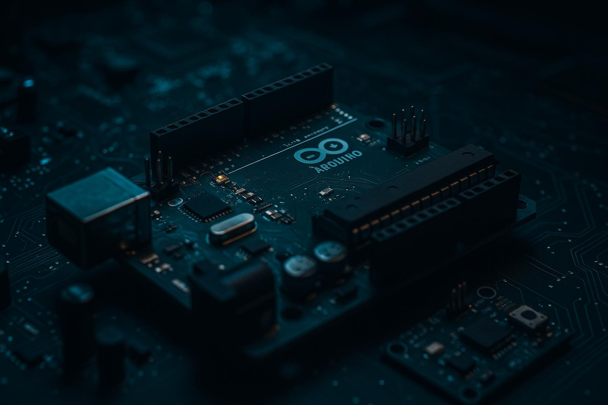

Exemplos de Projetos com Arduino

Semáforo com LEDs

Alarme ultrassônico

Controle de servo

Estação meteo

Seguidor de linha

Alarme de presença

Medidor de luz

Jogo do reflexo

Data logger simples